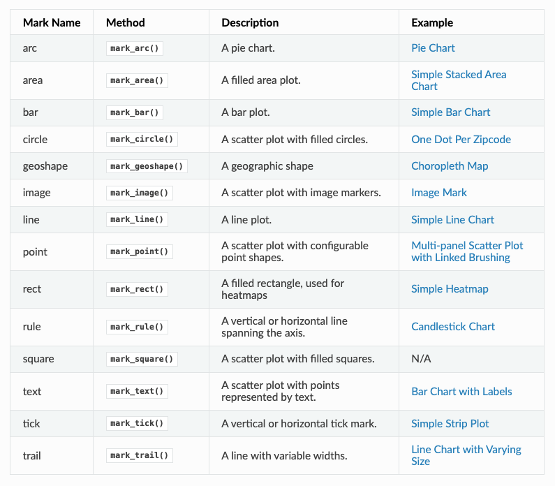
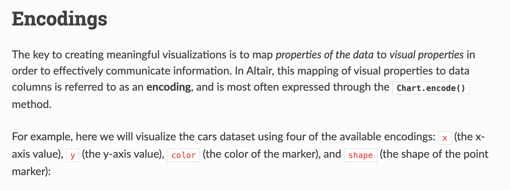
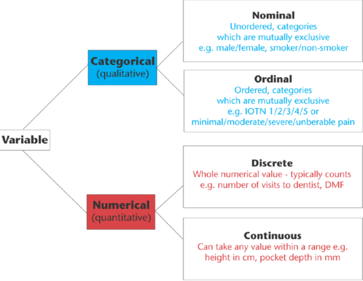

Exploratory Data Analysis & Data Visualization
Today’s Agenda
- Review GETting Culture Across APIs homework
- Revisit exploratory data analysis with the Top 500 Novels
- Discuss assigned readings
Milestone 2 Feedback & Grades will be updated in next 24 hours, along with participation grades. Thank you for your patience!
Any questions?
Volunteer Wheel & Homework Assignment
Want to follow along in a notebook?
Download Top500NovelsEDA.ipynb
Open the notebook, select your course virtual environment as the kernel, and run each cell as we work through the lesson.
Where did we leave off?
- What is the average number of visits for each state?
- What is the average number of visits for each National Park?
- How many National Parks are there in each state?
What else can we learn before answering a question?

How do we read a TSV file?
What do sep and encoding describe?
What is a character encoding?


What is the shape of this dataset?
What does each method reveal?
What does describe() summarize?
When is recorded data still missing information?
| Field | Pandas count | Common recorded value |
|---|---|---|
genre |
500 | na |
pg_eng_url |
500 | NA_not-pub-domain |
pg_orig_url |
64 | unavailable |
author_death |
496 | ALIVE |
Why do only 329 rows have a field of activity?
AUTHOR_FIELD_OF_ACTIVITY: Author’s primary fields of activity, according to VIAF. VIAF includes data from multiple global partner institutions, but we only collect VIAF data associated with the Library of Congress (LOC).
What is VIAF trying to structure?

What does NaN mean?
What does True mean in each result?
How can Booleans filter a DataFrame?
Can missingness have a pattern?
Exploratory Data Analysis
What is EDA?
Who popularized Exploratory Data Analysis?

What does EDA ask us to do?
- Understand structure and important variables
- Detect outliers and anomalies
- Examine missingness and coverage
- Test assumptions through summaries and visualization
- Generate questions before formal modeling
What does a quick Pandas plot reveal?
Can we see library rank over time?
Data Visualization With Altair
Why are there so many visualization libraries?

Where did Altair come from?

How do we install and import Altair?
How does an Altair chart work?
What are marks and encodings?


Why does Altair separate marks from encodings?
Can Altair identify individual novels?
What do Altair’s data types mean?

| Code | Type |
|---|---|
N |
Nominal |
O |
Ordinal |
Q |
Quantitative |
T |
Temporal |
What happens if an integer year is labeled temporal?
Why does the x-axis look wrong?
Why does a temporal year need conversion?
Can publication year explain missing activity metadata?
What should we do when the dataset cannot explain its own gaps?
Reshaping Metadata
What relationships appear between genre and author activity?
What is difficult about values such as novels,fiction?
How can we split compound values?
What does explode() change?
What happens when we visualize every category?
Which rows can support this comparison?
What changes after filtering?
Does every author contribute equally?
How can we reduce prolific-author effects?
Which apparent patterns survive deduplication?
| Relationship | Novel-activity rows | Unique authors |
|---|---|---|
| Fantasy + novels | 20 | 4 |
| Thrillers + law | 11 | 2 |
| Thrillers + acting | 10 | 1 |
| Science fiction + science fiction | 12 | 7 |
| History + literature | 6 | 6 |
What are we really comparing?
Person-level authority metadata
VIAF + Library of Congress records
Work-level descriptive metadata
Genres from OCLC’s original Top 500 list
What does “Garbage In, Garbage Out” leave out?

Exploring and Visualizing Culture Homework
Choose one dataset from Responsible Datasets in Context.
- Explore its shape and contents with Pandas.
- Create at least one Altair chart.
- Explain briefly what you notice.
What matters most?
The goal is not to use the largest number of methods or produce the most complicated chart.
Inspect the data. Make one purposeful visualization. Explain what you notice.